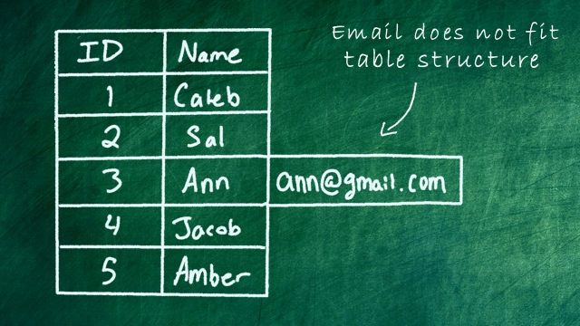
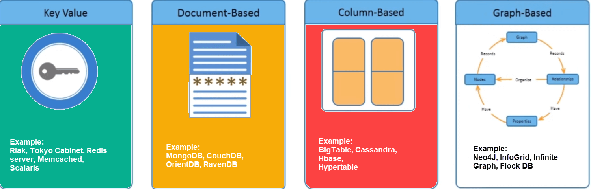
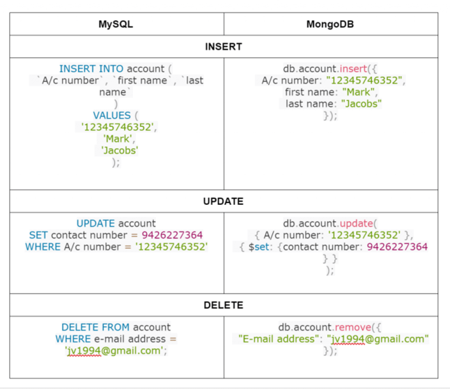

Data is stored in database tables by following a strict data schema (= structure)
Data is distributed across multiple tables which are connected via relations
The Problem with Structured Data

NoSQL Databases
No schemas
No relations
Types of noSQL databases

Document in MongoDB
Relationship of MySQL terminology with MongoDB
Download MongoDB
Creating a Database
To view available databases, run this command: show dbs
Run this command to create a database and set it to be the active database: use databasename
Query Language

The speed of MySQL and MongoDB for 1000000 records
When to use MongoDB?
When you need high availability of data with automatic, fast and instant data recovery.
If you have an unstable schema and you want to reduce your schema migration cost.
If you don’t have a Database Administrator.
If most of your services are cloud-based, MongoDB is best suitable for you, as its native scale-out architecture enabled by ‘sharding’ aligns well with horizontal scaling and agility offered by cloud computing.
MongoDB: Pros & Cons
Absence of a schema gives you more flexibility - you can adjust your stored data at any point and introduce new "fields"
Data is stored in the format your app needs it - this speeds up fetching the data
Expansion plans are flexible and can be easily achieved by adding more machines and RAM to the system.
The cons of MongoDB include higher data size over the period of time.